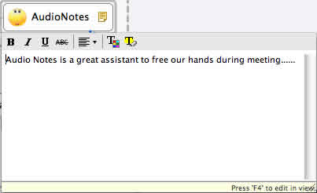

Rich text notes are used to annotate topics. You can easily create new notes and format existing notes. Here's how:
To Add notes to a topic:
- Select a topic.
- Open the pop-out dialog with one of the following ways.
- Click notes icon
 on the toolbar.
on the toolbar. - Right-click the mouse, select 'Notes'.
- Press 'F4'.
- Click notes icon
- Type your notes about the topic in this pop-up notes dialog.
- Click "Ctrl(Command)+Enter" to save notes and close this pop-up dialog.
Note: "Ctrl+Enter" is not available on Linux at present.

To Format existing notes:
- Open the Pop-up notes dialog, or go directly to Notes View.
- Use the notes toolbar to edit these attributes:
- Text font, size, type, alignment, color.
- Background color.
- Insert Images.
- Insert Hyperlink
- If you type the sentence like "http://www.xmind.net" in the notes, XMind will format it as a hyperlink automatically.


To Open the Hyperlink in the Notes
- Open the Notes View
- Press the Ctrl(Command on Mac) key
- Move the mouse, and click that link
- Your default browser will open this link.
Note: You can only insert local image into topic notes.